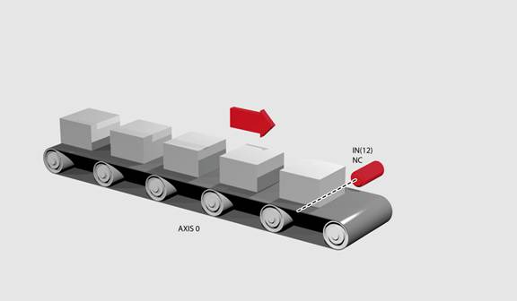
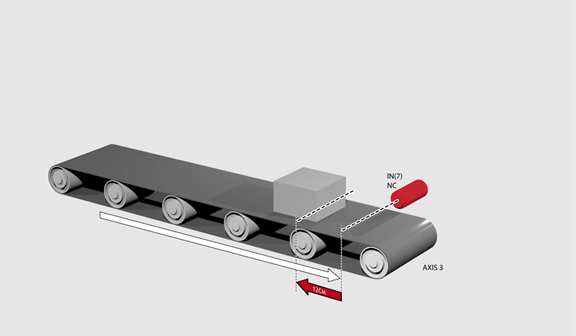

Axis Command
FORWARD
FO
Sets continuous forward movement. The axis accelerates at the programmed ACCEL rate and continues moving at the SPEED value until either a CANCEL or RAPIDSTOP command are encountered. It then decelerates to a stop at the programmed DECEL rate.
If the axis reaches either the forward limit switch or forward soft limit, the FORWARD will be cancelled and the axis will decelerate to a stop.
Run an axis forwards. When an input signal is detected on input 12, bring the axis to a stop.

FORWARD
'wait for stop signal
WAIT UNTIL IN(12)=ON
CANCEL
WAIT IDLE
Move an axis forwards until it hits the end limit switch, then move it in the reverse direction for 25 cm.

BASE(3)
FWD_IN=7 'limit switch connected to input 7
FORWARD
WAIT IDLE 'wait for motion to stop on the switch
MOVE(-25.0)
WAIT IDLE
A machine that applies lids to cartons uses a simulated line shaft. This example sets up a virtual axis running forward, this is to simulate the line shaft. Axis 0 is then CONNECT ed to this to run the conveyor. Axis 1 controls a vacuum roller that feeds the lids on to the cartons using the MOVELINK control.
BASE(4)
ATYPE=0 'Set axis 4 to virtual axis
REP_OPTION=1
SERVO=ON
FORWARD 'starts line shaft
BASE(0)
CONNECT(-1,4) 'Connects base 0 to virtual axis in reverse
WHILE IN(2)=ON
BASE(1)
'Links axis 1 to the shaft in reverse direction
MOVELINK(-4000,2000,0,0,4,2,1000)
WAIT IDLE
WEND
RAPIDSTOP